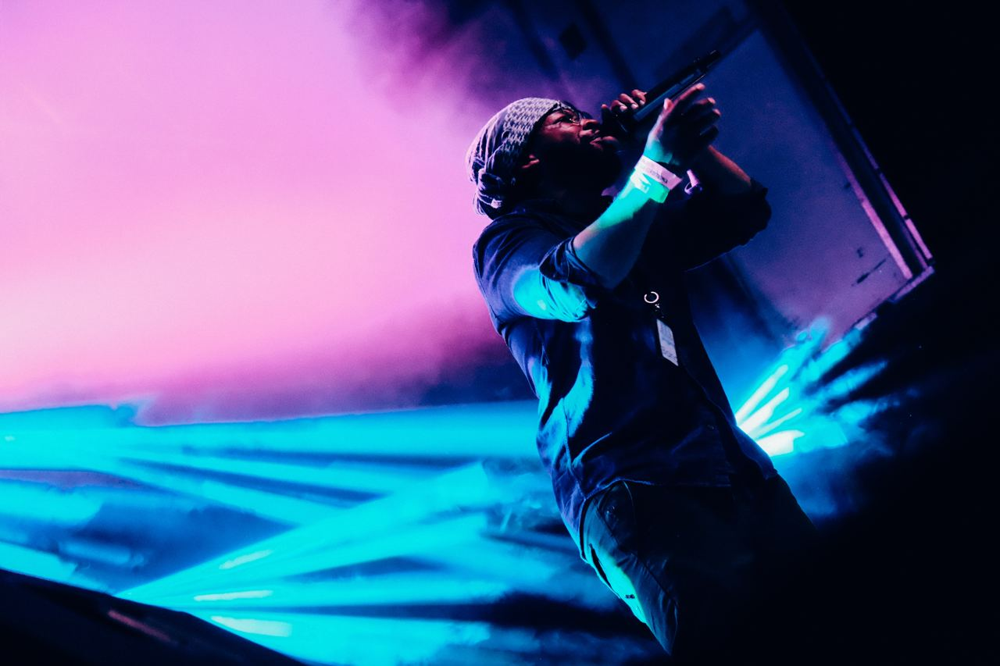

A person who makes, plays, or produces music as a career is known as a music artist. Musicians, songwriters, instrumentalists, composers, and producers are all examples of music performers. They may perform in a range of vocal genres and styles, such as jazz, world, classical, pop, rock, and hip-hop.
Musicians can create music for live performances, studio recordings, computer games, and movies. To make new music, they might also work together with other musicians, producers, or professionals from their field.
Megan Thee Stallion
Megan Jovon Ruth Pete was born on February 15, 1995 in San Antonio, Texas and raised in Houston, Texas. Her first ever single was "Like a Stallion" in April 2016.
Olivia Rodrigo
Olivia Isabel Rodrigo was born on February 20, 2003 in Temecula, California, United States. Olivia Rodrigo is an actress, singer, and songwriter. She first gained prominence for her role as Paige Olvera on the Disney Channel series "Bizaardvark" from 2016 to 2019.
Samara Joy
She attended the prestigious LaGuardia High School of Music & Art and Performing Arts in New York City, where she studied classical voice. However, it was during her time at LaGuardia that she discovered her passion for jazz and began to focus on developing her skills in that genre.